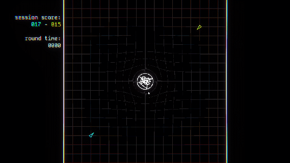

Spacewar! PLUS is a small 2-player arcade game where you control a ship orbiting around a star and try to kill your opponent. You can also hit the star to send it flying across the map, making it a hazard you can use to your advantage. There is also a big freaking laser.
The original brief for this project was to create a game based on an arcade game with an added twist of your choosing. I decided to expand on the classic game Spacewar!, which is technically not an arcade game, but the direct ancestor of iconic arcade games like Asteroids.
In my opinion, my biggest strength in this project was scope. The core gameplay of Spacewar! PLUS is relatively simple, being implemented fully in a little over a week. The rest of my available time was spent playtesting, fixing bugs and adding polish, which led to this game having some of my best visuals and cleanest UI.